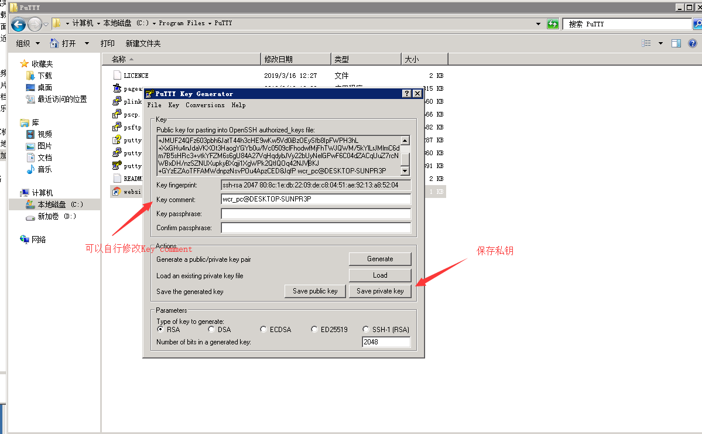
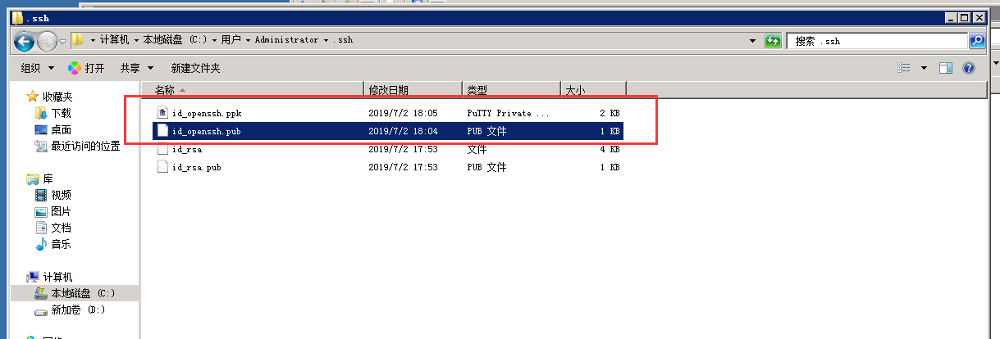
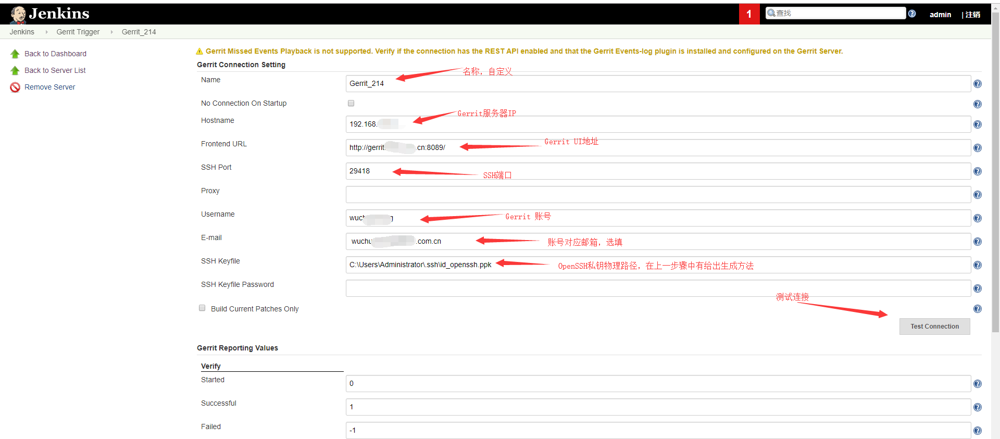
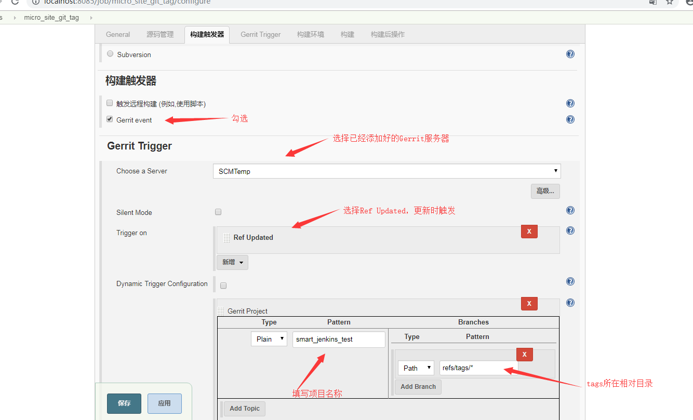

Jenkins使用Gerrit Trigger实现提交tag后自动构建
项目背景
- 项目：smart_platform框架
- 开发工具：Visual Studio 2015
- 开发语言：C# 6.0
- 源码控制管理软件：Git
- 源码审查软件：Gerrit
实现目标
为了实现当开发人员提交tag标签时，Jenkins能够自动获取最新源码。
前期准备
1、下载nuget.exe，用来在编译时还原nuget包，下载地址：https://www.nuget.org/downloads 。
2、安装Gerrit Trigger插件，在Jenkins系统管理 -> 插件管理中找到Gerrit Trigger插件，选择直接下载安装。
3、下载安装PuTTY，下载地址：https://www.puttygen.com/download-putty ，用来生成OpenSSH的私钥和公钥，在Gerrit Trigger插件中需要通过OpenSSH的私钥来实现与Gerrit服务器的连接。如何使用PuTTY生成OpenSSH的私钥和公钥
- 打开PuTTY安装目录，找到puttygen.exe，双击打开操作界面。
- 点击Generate，开始生成，最后会得到一串公钥和私钥，可以点击保存按钮下载，们可以将Key comment修改为我们自己想要的值,如下图一。
- 生成完成之后，Public Key我们最好是选择框内的内容复制黏贴到文本内，将文本命名为.pub文件，且要将OpenSSH公钥和SSH公钥都添加到gerrit服务器 -> Settings -> SSH Keys -> ADD New SSH key，点击Save private key将私钥保存为.ppk文件，并将两个文件存放到.ssh文件夹下，得到如图二的结果。
 
4、配置Gerrit Trigger，Jenkins系统管理 -> Gerrit Trigger，选择“Add New Server”，添加一个新的Gerrit服务器，具体配置参考下图，当点击测试连接出现“Success”时说明连接成功。

新建Jenkins任务
1、任务名称：自行定义，此处暂定smart_platform。
2、General，填写任务描述。
3、源码管理，勾选Git，在Repository URL处填写源码仓储的地址，如：ssh://xxx/smart_platform ,若添加完之后出现status code 128: stdout: stderr: Host key verification failed错误，请先尝试使用Git命令行拉取代码看是否成功；分支（Branch）根据实际情况填写。
4、构建触发器，具体配置参考下图。 5、构建，添加
执行Windows批处理命令构建，命令行C:\Soft\nuget.exe restore，还原nuget包，其中“C:\Soft\nuget.exe”为nueget程序所在的物理路径。构建校验
使用Git提交新标签tag查看是否自动构建，若构建成功，那么Jenkins会将最新的代码拉取至安装目录下的workspace/smart_platform文件夹，如果想对源码进行编译发布可自行增加构建步骤，具体可参考教程第四章。End